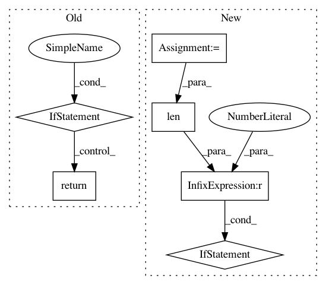

0b47129713e8cd63c49a0c53202f2b3deac941cc,softlearning/policies/latent_space_policy.py,LatentSpacePolicy,actions_for,#LatentSpacePolicy#Any#Any#Any#Any#Any#Any#,67
Before Change
log_pis = self._log_pis_for_raw(
conditions, raw_actions, name=name, reuse=reuse)
if with_raw_actions:
return actions, log_pis, raw_actions
return actions, log_pis
return actions
def _log_pis_for_raw(self, conditions, raw_actions, name=None,
After Change
raw_actions = tf.stop_gradient(raw_actions)
actions = tf.tanh(raw_actions) if self._squash else raw_actions
return_list = [actions]
if with_log_pis:
log_pis = self._log_pis_for_raw(conditions, raw_actions,
name)
return_list.append(log_pis)
if with_raw_actions:
return_list.append(raw_actions)
// not sure the best way of returning variable outputs
if len(return_list) > 1:
return return_list
return actions
def _log_pis_for_raw(self, conditions, raw_actions, name=None,
In pattern: SUPERPATTERN
Frequency: 3
Non-data size: 6
Instances
Project Name: rail-berkeley/softlearning
Commit Name: 0b47129713e8cd63c49a0c53202f2b3deac941cc
Time: 2018-07-09
Author: azhou42@berkeley.edu
File Name: softlearning/policies/latent_space_policy.py
Class Name: LatentSpacePolicy
Method Name: actions_for
Project Name: rail-berkeley/softlearning
Commit Name: 2ccceaf73c447a99d37ad64b2b7999383ccebbd0
Time: 2018-07-04
Author: azhou42@berkeley.edu
File Name: softlearning/policies/gaussian_policy.py
Class Name: GaussianPolicy
Method Name: actions_for
Project Name: apple/coremltools
Commit Name: 6579941f769413ed00f5330ad45c3c5f44c52927
Time: 2019-09-16
Author: awadhwa@apple.com
File Name: coremltools/converters/nnssa/coreml/graph_pass/op_fusions.py
Class Name:
Method Name: _is_NHWC